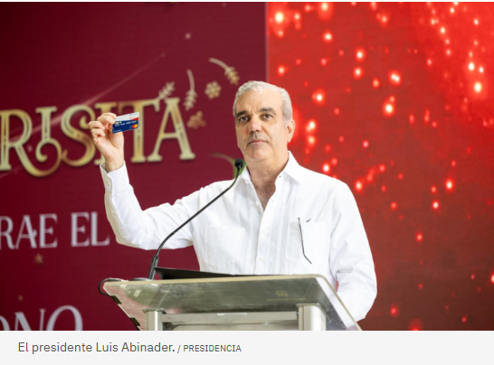
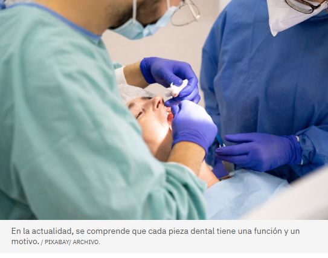
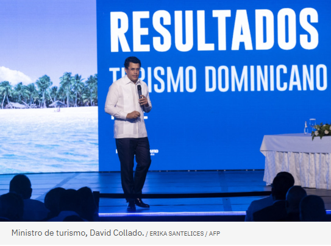

Gobierno entrega desde este jueves el bono navideño al Gabinete Social, dice presidente Abinader

El bono navideño para 2.6 millones de dominicanos fue entregado este jueves al Gabinete Social, dijo el presidente Luis Abinader durante el
lanzamiento de la quinta edición del programa gubernamental ´Brisita Navideña´.
El acto se celebró en el sector Invivienda, en Santo Domingo Este.
Abinader dijo que la ayuda económica será distribuida en dos modalidades: física y electrónica. A partir de hoy, el Gabinete Social recibió 1,200,000 bonos
físicos para distribuirlos de forma justa y para “los que más lo necesitan”, indicó Abinader.Mientras que la modalidad electrónica beneficiará a 1,400,000
personas, especialmente a familias del programa Supérate en condición de pobreza. Esta ayuda tendrá un aporte adicional de 1,500 pesos que será acreditado
directamente a los beneficiarios.
El jefe del Estado subrayó que esta combinación de entrega directa y transferencia digital garantiza que el apoyo llegue a quienes más lo necesitan, basados en estudios de
niveles socioeconómicos y prioridades sociales. Abinader llamó al país a recibir el 2026 con esperanza, optimismo y determinación, trabajando juntos por la salud, el progreso y el bienestar de todas las familias
dominicanas.
¿Sabías que el 50% de los casos de hipertensión o diabetes podrían detectarse en consultas dentales?
Implantar los protocolos incluidos, pues son capaces de mejorar el abordaje integral de los pacientes y detectar
enfermedades no diagnosticadas, un impacto "positivo" descrito por los centros adscritos.

Entre el 30 y el 50 por ciento de los casos de hipertensión arterial o de diabetes podrían detectarse en las consultas de salud bucodental,
tal y como han vaticinado los coordinadores de Promosalud, un programa pionero a nivel mundial para la detección precoz de factores de riesgo
sistémicos asociados a la enfermedad periodontal y la integración de la salud bucodental dentro del marco de la salud general.
El coordinador principal de Promosalud, Eduardo Montero, ha destacado la "viabilidad y utilidad" de implantar los protocolos incluidos, pues son capaces de mejorar
el abordaje integral de los pacientes y detectar enfermedades no diagnosticadas, un impacto "positivo" descrito por los centros adscritos."Además, fortalece la relación
con el paciente, al percibir éste un cuidado más amplio de su salud. Por último, posiciona a la Odontología dentro de la red asistencial sanitaria, reforzando la percepción
del dentista como profesional clave en la detección precoz de enfermedades crónicas no transmisibles", ha añadido.
Turismo
RD será la sede de la Asamblea General de la ONU Turismo en el 2027
Por Laura Gómez
Publicado el
El país fue elegido por la ONU Turismo mediante la resolución 631 (XX) tras presentar su candidatura, mientras que la asamblea será celebrada en el año 2027

La Organización Mundial de Turismo (ONU Turismo) confirmó a República Dominicana para ser la sede de su vigésima séptima Asamblea General, la cual reunirá importantes
funcionarios del turismo a nivel mundial. El país fue elegido por la ONU Turismo mediante la resolución 631 tras presentar su candidatura, mientras que la asamblea
será celebrada en el año 2027.
“La candidatura de la República Dominicana ha recibido el patrocinio de al menos el 10 % de los Estados miembros requeridos en virtud de las directrices para la selección
de lugares para las sesiones de la Asamblea General, adoptadas a través de la resolución 631(XX)”, señala un comunicado del organismo.